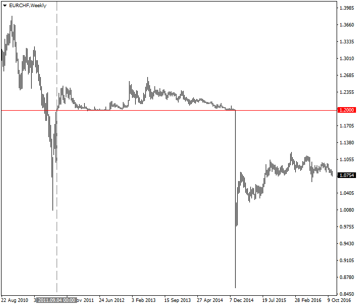
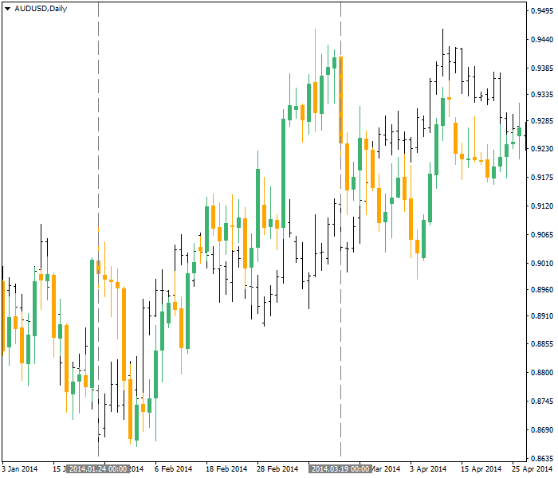

<!DOCTYPE html>
<html>
</html>
<head>
  <meta charset="utf-8">
  <meta http-equiv="X-UA-Compatible" content="IE=edge">
  <title>外汇站（fx-z.com） - 货币相关性</title>
  <meta name="description" content="">
  <meta name="viewport" content="width=device-width, initial-scale=1">
  <meta name="robots" content="all,follow">
  <!-- Bootstrap CSS-->
  <link rel="stylesheet" href="vendor/bootstrap/css/bootstrap.min.css">
  <!-- Font Awesome CSS-->
  <link rel="stylesheet" href="vendor/font-awesome/css/font-awesome.min.css">
  <!-- Google fonts - Roboto-->
  <link rel="stylesheet" href="https://fonts.googleapis.com/css?family=Roboto:400,300,700,400italic">
  <!-- owl carousel-->
  <link rel="stylesheet" href="vendor/owl.carousel/assets/owl.carousel.css">
  <link rel="stylesheet" href="vendor/owl.carousel/assets/owl.theme.default.css">
  <!-- theme stylesheet-->
  <link rel="stylesheet" href="css/style.default.css" id="theme-stylesheet">
  <!-- Custom stylesheet - for your changes-->
  <link rel="stylesheet" href="css/custom.css">
  <!-- Favicon-->
  <link rel="shortcut icon" href="img/favicon.png">
  <!-- Tweaks for older IEs--><!--[if lt IE 9]>
    <script src="https://oss.maxcdn.com/html5shiv/3.7.3/html5shiv.min.js"></script>
    <script src="https://oss.maxcdn.com/respond/1.4.2/respond.min.js"></script><![endif]-->
</head>
<body>
  <div id="all">
    <div class="container-fluid">
      <div class="row row-offcanvas row-offcanvas-left"> 
        <!--   *** SIDEBAR ***-->
        <div id="sidebar" class="col-md-4 col-lg-3 sidebar-offcanvas">
          <div class="sidebar-content">
            <h1 class="sidebar-heading"> <a href="https://fx-z.com">fx-z.com</a></h1>
            <p class="sidebar-p">介绍外汇相关的基本知识，告诉您如何进行自己的技术面和基本面分析，讲解先进的交易理念，并且为您阐述失败交易者与专业交易者之间的真正区别。 </p>
            <p class="sidebar-p">通过这些课程的学习，您将学会如何根据自己的优势来应用情绪分析，还将了解真实世界的事件会对货币汇率产生什么影响，央行在外汇市场中所发挥的作用，以及交易者在颇受欢迎的即期外汇交易中有哪些选择方案。 </p>
            <ul class="sidebar-menu">
                <!-- Link-->
                <li class="sidebar-item"><a href="https://fx-z.com" class="sidebar-link">首页</a></li>
                <!-- Link-->
                <li class="sidebar-item"><a href="cihui.html" class="sidebar-link">外汇词汇</a></li>
                <!-- Link-->
                <li class="sidebar-item"><a href="ebook.html" class="sidebar-link">获取外汇电子书</a></li>
            </ul>
            <p class="social"><a href="https://www.cn-forextime.com/zh?partner_id=4920383" target="_blank"data-animate-hover="pulse" class="external facebook"><i class="fa fa-eur"></i></a><a href="https://www.cn-forextime.com/zh?partner_id=4920383" target="_blank" data-animate-hover="pulse" class="external gplus"><i class="fa fa-gbp"></i></a><a href="https://www.cn-forextime.com/zh?partner_id=4920383" target="_blank" data-animate-hover="pulse" class="external twitter"><i class="fa fa-rmb"></i></a><a href="https://www.cn-forextime.com/zh?partner_id=4920383" target="_blank" title="" class="external instagram"><i class="fa fa-dollar"></i></a><a href="https://www.cn-forextime.com/zh?partner_id=4920383" target="_blank" data-animate-hover="pulse" class="email"><i class="fa fa-money"></i></a></p>
            <div class="copyright text-center text-md-left">
             
              
            </div>
          </div>
        </div>
        <!--   *** SIDEBAR END ***  -->
        <!--   *** DETAIL ***-->
        <div class="col-md-8 col-lg-9 content-column white-background">
          <div class="small-navbar d-flex d-md-none">
            <button type="button" data-toggle="offcanvas" class="btn btn-outline-primary"> <i class="fa fa-align-left mr-2"></i>菜单</button>
            <h1 class="small-navbar-heading"> <a href="https://fx-z.com/15-1.html">下一篇 </a></h1>
          </div>
          <div class="row">
            <div class="col-xl-10">
              <div class="content-column-content">
                <h1>货币相关性</h1>
   <p>
    “相关性”这个词经常用于日常生活中——这种用法可以很随意，也可以作为科学术语使用，但这种用法需要非常精确。它是指两件事之间的相关程度。
</p>
<p>
    相关性通过“相关系数”这种统计方式来定义，系数值在 -1 到 +1 的范围内。完全正相关的系数为 +1，完全负相关的系数为 -1，而相关系数为零则表示毫无相关性。完全正相关意味着，一种货币的走向将始终与另一种货币的走向相同。完美的负相关性意味着，一种货币的走向将始终与其它货币的走向相反。科学中的零相关意味着两个变量之间毫无关系，但由于这种情况在外汇中毫无可能性——虽然关系很远，但总有些联系——我们说，我们根本无法预测一种价格的动向将如何影响另一种价格的走势——这就像投掷硬币一样，或者是随机结果。
</p>
<p>
    不同分析师将根据相关系数提供不同的从弱到强的滑动量。有些人称相关系数至少须达到 0.6 才能被认为是稳定的关系，而其他人认为须达到 0.7。这里有一个版本：
</p>
<p>
    0 到 0.4：0 到弱相关性
</p>
<p>
    0.5-0.6：中等但不可靠的相关性
</p>
<p>
    0.7-0.8：较强的相关性
</p>
<p>
    0.9-1.0：极强的相关性
</p>
<p>
    无论是正相关还是负相关，外汇中完全 100% 的相关性仅存在于非常短的时段内。这是因为每种货币须遵循货币发行国的条件，而国家之间的条件永远不可能完全相同。这引发了一个很重要的问题——您可以在网上看到大量货币关联表，上面显示了货币 A 对货币 B 的相关系数，但请务必查看其周期性。有些图表甚至注明用于计算相关系数的时间段！
</p>
<p>
    您之所以在各个网站上见到不同的相关系数，原因在于无法规定它们的周期性。有的网站会说 USD/CAD 与 AUD/USD 的相关性为 70%，有的网站会说其相关性为 96%，而还有网站会显示其相关性为 45%。这些数据可能都没错——但它们的周期性不同。
</p>
<p>
    另一个引起差异的原因在于所涵盖的数据量。如果您比较 1 年数据与 10 年数据，您会得到不同的系数。而且请记住，外汇交易不是科学实验。您可能想将 10 年数据用于科学项目，其中，研究对象的行为可以被假定为一致行为。但在外汇中，我们衡量的是人类行为；虽然有些模式始终保持一致，但更近期的行为与当前未来之间的相关性更大。这引起了一种利益冲突——您想要大量的数据，但也想要近期数据，因为近期数据更有可能与您的交易决定相关。
</p>
<p>
    <strong>案例</strong>
</p>
<p>
    在外汇中，我们总是谈论两种货币。两种相关货币对第三种货币按照相同方向以及几乎相同的程度变动。这里有一个关于欧元和瑞士法郎的例子。由于欧洲国家与瑞士之间的贸易关系非常紧密，瑞士法郎的走势往往与欧元对美元的走势同步。欧元对美元与瑞士法郎对美元的关联范围为 -0.85 至 -1.00。为什么是负号？答案在于报价惯例。EUR/USD 的报价以欧元在前，而 USD/CHF 的报价以美元在前。
</p>
<p>
    当报价惯例不同时，请忽略负号——高数值正告诉您欧元和瑞士法郎紧密挂钩。如果您正买入欧元，您不希望卖出瑞士法郎。按照同样的思路，如果您同时买入欧元和瑞士法郎，您实质上是将对美元的押注加倍——同时交易欧元和瑞士法郎让您根本没有任何多元化选择。多元化的本质在于，您有一种货币为很高的正相关性，而另一种货币为很高的负相关性。
</p>
<p>
    欧元与瑞士法郎的相关性非常自然，且由来已久，以致于瑞士国家银行货币政策的一项关键举措是为 EUR/CHF 的汇率设置下限（1.2000），以防止瑞士法郎过于强势（并且摧毁瑞士出口市场）。2011 年，欧元与瑞士法郎接近等值时，瑞士国家银行宣布设置汇率下限，而且它决心干预汇率下限执行的发言很有成效。SNB（瑞士国家银行）确实曾进行多次干预，甚至更多次威胁将采取干预措施，但它的信誉度坚实可靠，直至 2015 年 1 月 15 日该汇率下限宣告失败。在汇率下限被取消前，EUR/CHF 交易者始终尊重且遵循由 SNB 设置的汇率下限：
</p>
<p>
     SNB 于 2011 年 9 月 6 日（灰色垂直线）将汇率下限设为 1.2000（红线）。之后，于 2015 年 1 月 15 日取消了该下限（峰值明显下降）。
</p>
<p>
    不过，欧元/瑞士法郎在外汇中仍具有最强的相关性。另一个相互关联且对第三种货币走势相似的货币对是 AUD 和 NZD。AUD/USD 对 NZD/USD 的一周相关系数为 0.95。这意味着 NZD/USD 95% 的动向可以通过 AUD/USD 的动向解释。AUD/EUR 的关系略有不同，其相关性为 0.98，而 NZD/EUR 在一周时间周期内的相关性仅为 0.93。从实际来看，如果您正买入 AUD/EUR，并且希望通过卖出 EUR/NZD 将投注加倍，您相信这两笔交易完全相同，但实际结果将略低于您的预期。不过，重要的是，如果您见到 AUD/USD 或 EUR/AUD 开始出现突破动作，NZD 做出相同突破动作的几率是否对您有利。
</p>
<p>
    为您奉上一点市场知识：在 SNB 大致固定欧元/瑞郎汇率允许范围之前的数个世纪，交易者称德国马克和后来的欧元均由“瑞郎”引领。近年来，交易者开始发现澳元“引领”了欧元。下图显示 2014 年初的 AUD/USD 和 EUR/USD 走势。在走势开始前，AUD 首先探底（第一条灰色垂直线），约早于 EUR 一周。图表右侧，AUD 持续上涨，但 EUR 在大幅走高且涨幅“远远”大于 AUD 之后经历了一次回调（第二条灰色垂直线）。
</p>
<p>
     AUD/USD（黑色）与 EUR/USD（绿色和橙色）对应绘制。
</p>
<p>
    没有人可以说，欧元向下调整，旨在与澳元的上行步调更加一致，是因为交易者注意到与澳元相比，欧元的涨幅太大和太快。可能有些交易者以这种方式交易，但我们没有任何相关的实质证据或证明。
</p>
<p>
    <strong>使用相关性网站</strong>
</p>
<p>
    交易者对相关性网站的需求很大。周期性至关重要。例如，某网站上 EUR/USD 与 GBP/USD 的一周相关系数为 0.94，意味着若欧元走高，英镑也很有可能上涨。但如果以 6 个月为基准，相关系数是一个非常弱的数值——仅有 0.31。这意味着，如果您预期持仓六个月，就不能以该相关系数为准。同样，EUR/USD 与 USD/JPY 的一周相关性为 -0.23，但一年相关性要强很多（-0.69）。这说明，您不能将日元的短期走势与欧元挂钩，但从长期看，相关性确实存在，虽然 0.69 的相关系数并不强势。
</p>
<p>
    请谨慎使用您见到的数据。外汇新手可能被看起来很强的相关性吸引，并且急于设计以这些相关性为基础的交易体制。这种方法的问题在于如果您有一个 60 分钟交易窗口——即您计划在一小时内建立和关闭您的交易，您将希望看到过去数百个一小时的相关系数。查看上周或上个月计算的一小时系数对您今天的操作并无用处。随机事件，例如大交易商改变仓位或地缘政治冲击, 可能大幅改变一种货币的走向，但不影响另一种货币。
</p>
<p>
    同样，如果您查看 5 分钟相关性表格，您会惊讶地发现不同之处。例如，在某网站上，AUD/USD 对 NZD/USD 的相关系数在一系列 5 分钟间隔中位于 96.4% 到 12.2% 的范围内。本例中的网站未说明它使用了多少个 5 分钟间隔，或者 5 分钟间隔收集的具体日期和时间，因为这些数据毫无意义。为了进行可靠的统计衡量，它必须至少建立在 30 个数据点的基础上，而且这只是科学家的最低计数。在外汇中，我们衡量人类行为，而不是物理对象，因此我们的观察标准必须高很多，可能为 300。物理对象的行为方式远比人类行为更有预测性！
</p>
<p>
    大概，本例中的 5 分钟交易想法是假设 NZD 与 AUD 的相关性偏离后会得到修正，因此，如果 NZD 落后与走高的 AUD，您认为 NZD 之后也会迎头赶上，因此想趁机买入 NZD。考虑到 NZD 与 AUD 在大部分时间周期中的强相关性，上述想法并不是一个坏主意，但它很难即时实施——而且，如果目前没有实际相关系数，那么这种方法不可能即时实施。
</p>
<p>
    最后，还是那句值得重复无数次的话：相关性不是因果关系。即使是科学中，也有许多示例显示事件具有极高的相关系数，但这些事件在任何方面都不相关。这是巧合的真正含义。在外汇中，我们有时出于真正的原因而假设相关性，但我们并非始终有因果关系证明，更不用说证据。这在 USD/CAD 和 EUR/USD 中表现得最清楚。美国和加拿大地域相邻，而且加拿大的贸易和资金流动严重依赖于美国。但加拿大也是一个石油以及其它金属和大宗商品的生产国及出口国，这一方面独立于美国。我们发现，加元与美国和加拿大之间的利率差异具有很大的相关性，同时，加元与商品价格也有很大的相关性；这两者都属于强劲的基本面。您可能认为这两者具有决定性。
</p>
<p>
    然而，某网站上 EUR/CAD 与 EUR/USD 的关联系数为 63.3％——且并未注明周期性。另一个网站上，这两个货币对之间的一周相关系数从 0.86 起步，而一年相关系数从 0.88 起步，但这些数据来自 60 世纪中期的 1 个月、3 个月和 6 个月。这说明什么？这说明加元倾向于追随欧元，而不是美元。如果欧元对美元走高，加元同样对美元上涨。利率差异和商品价格发生了什么呢？我们可能需要假设它们对欧元和加元的影响力相同，或者大致相同。在外汇关联中寻找因果关系的底线有时简单，如 EUR/CHF 对美元和 AUD/NZD，但有时会成为混乱的分析。
</p>
<p>
    <br/>
</p>
<p>
    <br/>
</p>
              </div>
            </div>
          </div>
        </div>
      </div>
    </div>
  </div>
  <!-- JavaScript files-->
  <script src="vendor/jquery/jquery.min.js"></script>
  <script src="vendor/popper.js/umd/popper.min.js"> </script>
  <script src="vendor/bootstrap/js/bootstrap.min.js"></script>
  <script src="vendor/jquery.cookie/jquery.cookie.js"> </script>
  <script src="vendor/owl.carousel/owl.carousel.min.js"></script>
  <script src="vendor/masonry-layout/masonry.pkgd.min.js"></script>
  <script src="js/front.js"></script>
</body>